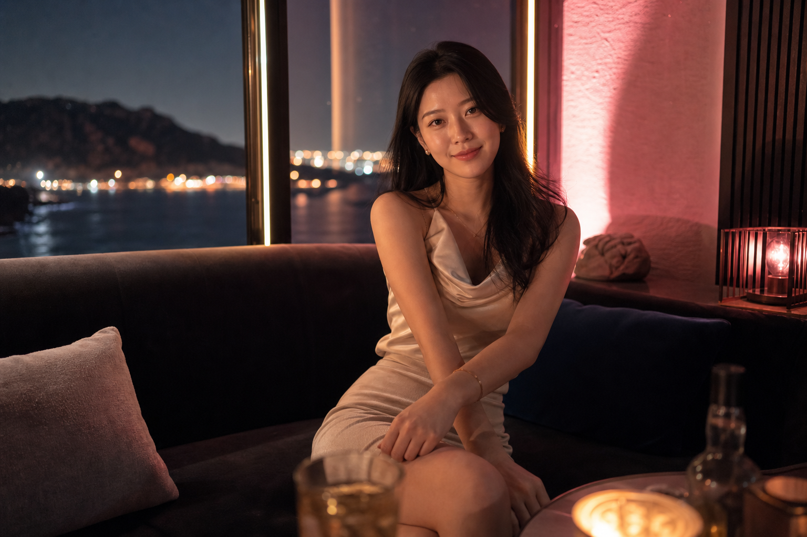

Checklist · Jeju
제주 여행 2차 고를 때 확인 순서 5단계
제주에 오면 저녁 식사 뒤 2차를 넣을지 고민하는 일이 많습니다. 업종·분위기·운영 시간이 섞여 검색되기 때문에, 처음에는 “어디부터 보면 되지?”가 더 큽니다. 이 글은 2차를 넣기 전에 스스로 점검할 순서만 정리한 체크리스트입니다.

제주에 오면 저녁 식사 뒤 2차를 넣을지 고민하는 일이 많습니다. 제주도 유흥이라는 말 아래에는 업종·분위기·운영 시간이 섞여 검색되기 때문에, 처음에는 “어디부터 보면 되지?”가 더 큽니다. 이 글은 특정 업장 홍보가 아니라, 2차를 넣기 전에 스스로 점검할 순서만 정리한 체크리스트입니다.
1단계 — 그날 2차의 목적을 한 문장으로 적기
“재밌게 놀자”만으로는 상담이 길어지기 쉽습니다. 아래 중 하나에 가깝게 적어 보는 것이 좋습니다.
- 친구들끼리 대화가 목적
- 분위기만 바꾸고 싶다 (시끄러운 곳은 싫다)
- 접대·비즈니스 일정
- 기념일·생일
목적이 다르면 추천되는 공간 유형도 달라집니다. 제주 여행이라면 대화 위주·일찍 정리인지 조금 더 길게인지부터 맞추는 편이 난감함이 적습니다.
2단계 — 인원과 “처음 오는 사람” 유무
인원 수는 가격·자리 배치뿐 아니라 분위기에도 영향을 줍니다. 2~3명과 5명 이상은 선호하는 공간이 다를 수 있습니다. 또한 처음 이쪽 분위기를 경험하는 일행이 있으면, 소음·진행 템포·프라이빗 여부를 예약 전에 더 분명히 말하는 것이 좋습니다.
3단계 — 비행기·숙소·다음 날 일정과 시간 맞추기
제주는 다음 날 일정이 밤 선택을 좌우합니다. 귀국 비행기, 렌터카 반납, 오전 투어가 있으면 2차 종료 시각을 먼저 정하는 것이 안전합니다. 일부 공간은 1부·2부처럼 시간대가 나뉘어 안내되기도 합니다.
4단계 — 분위기 키워드 세 가지만 고르기
업종 이름을 외우기보다, 아래에서 최대 세 가지만 골라 상담에 넣는 방식이 실용적입니다.
| 키워드 | 의미 (상담 시) |
|---|---|
| 조용한 대화 | 소음·홀 중심보다 일행 중심 |
| 프라이빗 | 옆 테이블 소리 최소화 |
| 진행이 빠르지 않음 | 술·분위기만 밀어붙이지 않음 |
| 일찍 마무리 | 12시 전후 정리 희망 |
| 귀가 동선 단순 | 숙소·택시 거리·대기 시간 |
이 항목 중 세 가지만 골라도, “우리 일행에 맞는지” 판단하기 쉬워집니다.
5단계 — 예약 전 안내에서 확인할 항목
블로그 후기만 보고 움직이기보다, 운영 여부·예약 가능 시간·당일 구성을 직접 확인하는 편이 마음이 편합니다.
체크리스트만으로도 달라지는 점
위 순서대로만 정리해도 “유명한 곳 찾기”보다 우리 일행에 맞는지를 먼저 볼 수 있습니다. 제주에서 2차를 처음 고민할 때는 업종 분류를 암기하기보다, 목적 → 인원 → 시간 → 분위기 → 안내 확인 순으로 점검해 보세요.